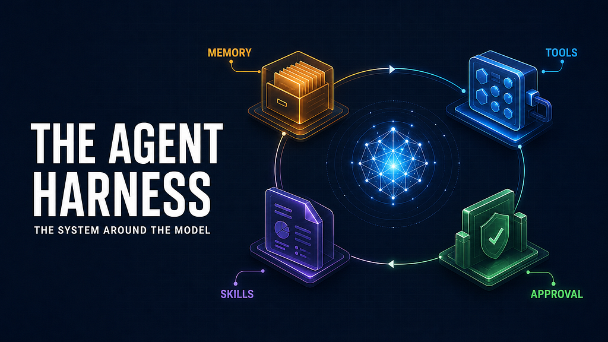

The Building Blocks of an Agent Harness: Memory, Tools, and Skills

An LLM can write, reason, and choose an action. On its own, though, it has no durable memory, no ability to inspect the outside world, and no mechanism for carrying an unfinished task through several steps.
That missing layer is the agent harness: the software around the model that decides what context to supply, exposes tools, executes the model’s requests, records useful information, and knows when the task is complete.
The useful mental model is not “send a prompt, get an answer.” It is a controlled loop:
user request
-> decide whether extra context is needed
-> retrieve only relevant local memory
-> offer the relevant tools
-> ask the model what to do next
-> execute a requested tool safely
-> return the result to the model
-> repeat until a final answer or a limit is reached
The model supplies judgment within a turn. The harness supplies continuity, capabilities, and control.
TL;DR
An LLM is one decision-maker in an agent system, not the agent system itself. The harness supplies the parts that make the model useful in the real world: a bounded loop, carefully selected context, validated and policy-controlled tools, inspectable local memory, and a safe path for recurring work to become reviewed project skills. The goal is not maximum autonomy. It is reliable progress with clear control boundaries.
A chat completion is one decision; an agent is a sequence
In a normal chat interaction, the model receives messages and produces text. That is often enough. But consider a request such as: “Compare this week’s deployment errors with the incident notes, then draft an update.”
The answer requires a sequence:
- Find the relevant errors.
- Read the incident notes.
- Compare the two sources.
- Decide whether more evidence is needed.
- Produce a concise update.
No individual model call has to contain the entire plan in advance. The harness lets the model make one next-best decision, observe the result, and decide again.
MAX_STEPS = 8
def run_agent_turn(user_message: str, session: Session) -> str:
context = build_context(user_message, session)
for _ in range(MAX_STEPS):
response = llm.respond(
messages=context.messages,
tools=context.tools,
)
if not response.tool_calls:
final_text = render_text_blocks(response.blocks)
session.append("assistant", final_text)
return final_text
results = execute_requested_tools(response.tool_calls, session)
context.messages.append(response.as_assistant_message())
context.messages.append(tool_result_message(results))
return "I couldn't complete that safely within the allowed number of steps."
This is the essential agent loop. A tool call is not the end of the interaction; it is an observation inserted back into the model’s working context. The model can now interpret the result, ask for another action, or answer the user.
The response should be modeled as an ordered sequence of content blocks, not merely as a string plus one optional tool call. Some providers can return several text blocks and several tool requests in one response, possibly interleaved. A provider adapter should preserve that order while translating provider-specific formats into a neutral representation such as TextBlock and ToolUseBlock. The harness can then execute the requested calls and send their individual results back in the format expected by that provider.
That distinction keeps the loop portable. The provider may use function calls, tool_use blocks, or another protocol; the harness should operate on one internal tool-call contract.
The step limit matters. It makes runaway behavior bounded and visible. Production harnesses usually add time budgets, cancellation, retries, tracing, and approval checks too. The point is not to make the model autonomous at all costs. It is to make each action deliberate and inspectable.
Context is working memory, not a dumping ground
Every token sent to the model competes for attention. A common failure mode is treating context as a warehouse: append the whole chat history, every saved fact, and the schema for every available tool. The result is more cost, more noise, and often worse decisions.
A better harness builds a fresh working set for each turn:
def build_context(user_message: str, session: Session) -> AgentContext:
memories = []
if should_retrieve(user_message, session.recent_messages()):
memories = memory.search(user_message, limit=5)
return AgentContext(
messages=[
system_message(BASE_INSTRUCTIONS),
memory_message(memories),
*session.recent_messages(limit=12),
user_message,
],
tools=tool_registry.for_request(user_message, memories),
)
The important phrase is if should retrieve. Retrieval should be gated, not automatic.
Simple questions such as “summarize the last result” may be answerable from the active conversation. “What time is it?” does not need a personal-memory search. A request about a prior decision, a person, a project, or a preference probably does.
That gate can be a few transparent rules, a lightweight classifier, or a small model asked for a constrained yes/no decision. Its purpose is not perfect recall. Its purpose is preventing irrelevant material from entering the prompt.
Local memory works best when it has clear jobs
Long-term memory should not be a raw transcript of everything the user and model have said. A transcript is useful evidence, but it is a poor prompt. It needs to be distilled into records with a purpose.
Three categories are particularly practical:
Memory typeExampleWhy it existsSemantic“The team prefers concise incident updates.”Durable facts and preferencesEpisodic“A production rollback occurred last Tuesday.”Dated events and decisionsProcedural“How to prepare the release report.”Reusable instructions and workflows
A local database with full-text search is often enough for this job. It is fast, easy to inspect, easy to back up, and avoids making a remote vector database the default dependency. Embeddings can be valuable when meaning-based matching is necessary, but they are not a substitute for deciding whether retrieval is relevant or for keeping stored records understandable.
CREATE TABLE memory (
id INTEGER PRIMARY KEY,
kind TEXT NOT NULL,
content TEXT NOT NULL,
occurred_at TEXT,
created_at TEXT NOT NULL
);
CREATE VIRTUAL TABLE memory_search
USING fts5(content, content='memory', content_rowid='id');
The storage choice matters less than the discipline around it:
- Retrieve a small, ranked set rather than the whole archive.
- Preserve provenance and timestamps, especially for events.
- Let operators inspect and correct records.
- Consolidate useful facts after a conversation instead of promoting every sentence to memory.
Consolidation is the bridge between history and memory. It might run after a session or in a background job: find new information, extract a compact record, classify it, save it with provenance, and mark the source as processed. That makes the operation idempotent and keeps the live loop focused on the current task.
Tools turn language into action
Tools are the harness’s contract with the outside world. A tool has a name, a human-readable description, an input schema, and an implementation. The model sees the contract; the harness owns execution.
@tool(
name="search_incidents",
description="Search incident records by service, date range, or keywords.",
input_schema={
"type": "object",
"properties": {
"query": {"type": "string"},
"from_date": {"type": "string", "format": "date"},
},
"required": ["query"],
},
)
def search_incidents(query: str, from_date: str | None = None) -> list[dict]:
return incident_store.search(query=query, from_date=from_date)
The model does not run this function. It requests a structured call. The harness validates arguments, checks permissions, invokes the implementation, redacts secrets where needed, and returns a result in a standard format.
def execute_tool_safely(call: ToolCall, session: Session) -> ToolResult:
tool = tool_registry.get(call.name)
if tool is None:
return ToolResult.error("unknown_tool", f"No tool named {call.name}")
arguments = tool.validate(call.arguments)
policy.authorize(tool, arguments, actor=session.user)
try:
value = tool.invoke(arguments, timeout_seconds=20)
audit.log_tool_success(session.id, tool.name, arguments)
return ToolResult.ok(value)
except TimeoutError:
return ToolResult.error("timeout", "The tool did not respond in time")
except Exception:
audit.log_tool_failure(session.id, tool.name)
return ToolResult.error("tool_failure", "The tool could not complete the request")
That boundary is where reliability and safety live. A model can choose a tool; it should not decide on its own whether it is allowed to send an email, modify a record, or run an expensive query. The harness can require confirmation for consequential operations and expose read-only tools by default.
When a response requests more than one tool, execution policy still belongs to the harness. It is usually reasonable to run only explicitly parallel-safe, read-only calls concurrently. Calls that write, have external effects, or depend on order should remain sequential. This small distinction preserves the latency benefit of parallel reads without making the action layer unpredictable.
One registry prevents special cases from taking over
Tools may originate in the application, a local plugin, a command-line integration, or a remote service. The loop should not need separate logic for each source.
A unified registry gives every tool the same shape:
registry.register(local_search_tool)
registry.register(calendar_tool)
registry.register(plugin_tool)
registry.register(remote_service_tool)
schemas = registry.schemas()
Now the model receives a coherent capability list, and the harness uses the same validation, authorization, timeout, audit, and error handling path for every call. Namespacing tools — such as calendar.create_event and files.read—also prevents collisions and makes intent clearer in logs.
As the tool set grows, progressive disclosure becomes important. A harness can select tools by user intent, task stage, permissions, or retrieved procedure rather than presenting hundreds of schemas on every turn. This is the tool equivalent of gated memory: show the model enough to act well, not everything the system has ever learned.
Skills are project procedures, not just more memory
A skill is a reusable, scoped procedure stored with the project. Unlike an episodic memory, it tells the agent how to approach a class of tasks: when to apply the procedure, what to verify, which tools are appropriate, and when to stop.
Keep the lifecycle explicit:
skills-draft/<skill-id>/SKILL.md -> review and approval -> skills/<skill-id>/SKILL.md
not available at runtime active at runtime
Each active skill should have machine-readable metadata — at minimum a stable name and a concise description — followed by human-readable instructions. The metadata makes discovery cheap; the body provides the actual procedure only when it is needed. Draft skills should never be retrieved into a live prompt: they are proposals, not production behavior.
There are two useful disclosure strategies:
- Eager disclosure: locally rank skills against the request and include the bodies of the best matches in the first model call. This is simple and works well for a small skill set.
- Progressive disclosure: first provide only a catalog of skill names and descriptions, plus a reserved select_active_skills capability. If the model selects a relevant skill, the harness validates the IDs and adds only those instruction bodies before the next decision.
The second pattern controls context growth as a project accumulates procedures. It is deliberately not a security boundary — the model can still ignore a relevant skill — but it makes the cost and visibility of loading instructions explicit. A clear system instruction and a tool description should explain that the selection capability exists and that the model should use it before acting on a relevant procedure.
A session can improve the harness after it ends
The live loop should focus on completing the current request. Once a session ends, though, the harness has an opportunity to learn from the work: not by retraining the model, but by identifying repeatable procedures that deserve to become project knowledge.
For example, after several sessions in which an agent follows the same release-triage process — collect logs, check deployment status, compare against known error patterns, and draft an update — the harness can analyze the trace and propose a reusable skill. A skill is simply a scoped instruction file: when to use a workflow, what inputs it needs, which tools are appropriate, what checks are required, and when to stop and ask a person.
def learn_from_completed_turn(turn: CompletedTurn) -> None:
if not turn.successful:
return
candidate = improvement_model.evaluate_worthiness(
requests=repeated_matching_requests(),
final_answers=repeated_matching_answers(),
tool_trace=redact_and_bound(turn.tool_trace),
existing_skills=skill_store.index(),
)
if candidate.worthy:
skill_store.save_draft(candidate, provenance=turn.id)
notify_reviewer("New skill draft is ready for review", candidate.id)
This is a different kind of memory. Semantic memory might retain “the release report is due Friday.” A procedural skill captures a durable method: “how to prepare the release report safely and consistently.” The first is a fact; the second changes how future tasks are approached.
The word draft is important. An agent should not silently convert one lucky outcome into a trusted instruction that can take consequential actions. A practical improvement cycle has two separate gates: first, collect evidence that a successful workflow has recurred; then ask an LLM evaluator whether the recurring workflow is actually worth turning into a skill. The evaluator should return a constrained, machine-valid decision — worthy or not worthy — rather than unstructured prose.
The harness needs further gates before a generated skill is activated:
- Redact secrets and personal data before the analysis step.
- Check that the proposed workflow is genuinely repeated rather than a one-off workaround.
- Compare it with existing skills to prevent duplicates and contradictions.
- Run validation against representative inputs or a sandbox where possible.
- Require review and approval for skills that use write-capable or high-impact tools.
- Keep version history, provenance, and a simple rollback path.
The draft itself should contain more than a title. It needs clear frontmatter for discovery, a specific “when to use” statement, a procedure grounded in the observed workflow, verification criteria, and stop conditions. A generic draft that merely says “use the tool” has not captured reusable knowledge.
With those controls, automatic improvement becomes a useful feedback loop:
completed session
-> analyze outcome and tool trace
-> extract a candidate procedure
-> validate and review it
-> save an approved skill in the project
-> retrieve that skill only when a later task needs it
The result is compounding capability. The model itself has not changed, but the harness has become better prepared for a recurring class of work. Crucially, it improves through inspectable artifacts in the project — not through opaque behavior that nobody can audit or correct.
The harness owns graceful failure
An agent is assembled from optional, fallible parts: memory stores, network services, plugins, tool processes, and the model provider itself. A robust design assumes one of them will eventually be unavailable.
The right response is usually degradation, not collapse:
- If memory retrieval fails, answer using the current conversation and say what context was unavailable when appropriate.
- If one external service is offline, keep unrelated tools available.
- If a tool times out, return a structured error to the model so it can try an alternative or explain the limitation.
- If a request is high impact, pause for user approval rather than guessing.
This also makes the system easier to debug. Each loop iteration can be traced as a compact record: what was retrieved, what tools were offered, what the model chose, what ran, and why the turn ended. The trace should respect privacy, but it should make an unexpected action explainable.
Provider-level tracing is particularly useful while integrating a model adapter: it can show the converted request and the raw response, including structured tool calls. Make that tracing opt-in and treat it as sensitive diagnostic output, because it may contain user messages, retrieved memory, skill instructions, tool arguments, and tool results.
The design principle underneath it all
The model is the probabilistic part of the system. The harness should be the disciplined part.
Its job is to make the right context available at the right time, constrain and observe effects in the real world, preserve useful knowledge without flooding the prompt, and stop when progress is no longer justified. Those choices — not a clever prompt alone — determine whether an agent feels like a reliable assistant or a chatbot with access to too much.
If you are building one, start small: one loop, a handful of read-only tools, a local and inspectable memory store, a retrieval gate, and clear limits. Add autonomy only where you can explain the control boundary. That is how an LLM becomes part of a system people can trust.
Reference implementation
A runnable Python reference implementation of these patterns — including OpenAI and Anthropic adapters, local SQLite/FTS memory, tool validation and approvals, active/draft skill conventions, progressive skill disclosure, and LLM-gated skill drafting — is available at github.com/kevinwengh/harness_demo.